古き良き佇まいを見ることができる、徳島近郊のローカル駅・後編 < 石井駅/徳島県石井町>

大正時代に建造された跨線橋が残る、徳島線・石井駅。初代路線開業の明治32年(1899)から今年でちょうど120年の年月が経ちますが、ほぼ当時の佇まいのまま現役稼働中です。
石井駅にある大正4年建造の跨線橋
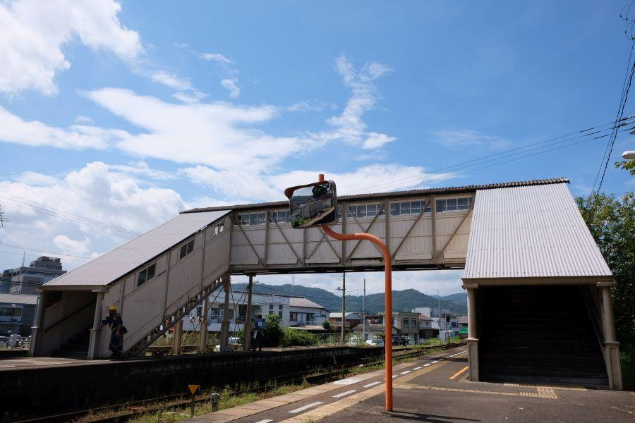
石井駅に来て、まずは大正4年(1915)建造の跨線橋をじっくり観察しようと思ったのですが、上下線列車が入線してきたので予定が変わりました。
慌てて跨線橋を駆け上がり、
ブリッジから両方向の列車が入線する様子を撮影。
反対側2番線に下りると、
徳島方面の各駅停車がすぐ発車(間に合わず)。
1番線の阿波池田方面の各駅停車が発車して跨線橋をくぐる場面をじっくり眺めて、
列車がいなくなった石井駅の2番線のプラットホームを端っこまで探検。
2番線の跨線橋登り口に戻ってきたところ。 ←今ここ
鐡道院の刻印
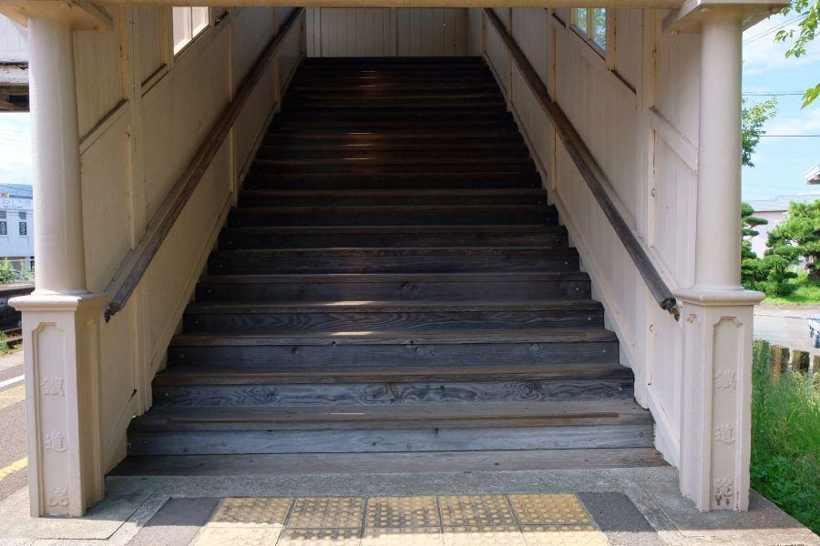
「鐡道院」
親柱の刻字がキラリと光ります。
鉄骨
羽目板
敷板
・
・
各板の交換や鉄骨の塗装が随時行われているものの、おおよそ建造時の佇まいと変わらないものと想像します。
意匠を凝らしたデザイン
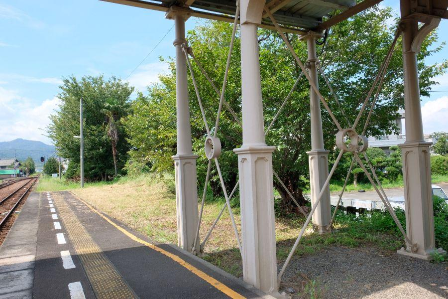
ブリッジを支える4本の柱は、1番線・2番線対称のデザイン。
登り口根元の親柱のように、意匠をこらしたものになっています。
これは現代の建造物では、あまり見ることができない特徴。人目につく場所ならともかく、「縁の下の力持ち」のような多くの乗客は見ていない部分にまでしっかりデザイン。
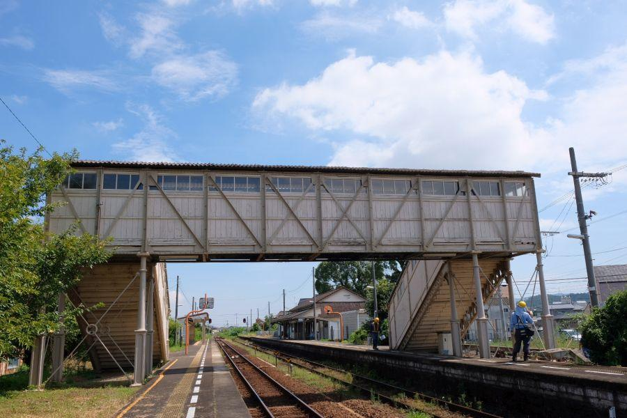
跨線橋の裏側
補強などもおそらく当時のまま。
100年の時が流れてもくたびれた古さを感じさせないのは、こまめな保守管理と洗練されたデザインのおかげです。
跨線橋内部
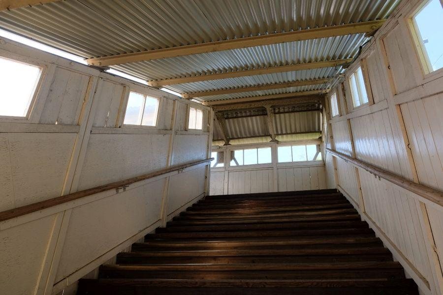
先ほどは階段を慌てて乗降したので、今度は戻りながらじっくりと細部を見て行くことにします。
※本来、駅やホームでは走らず慌てず行動するようにしましょう
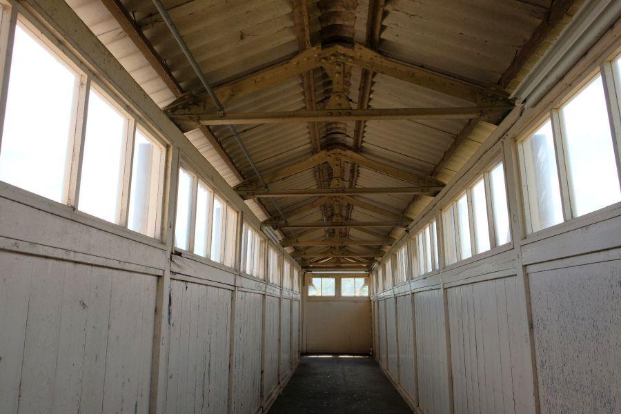
跨線橋のブリッジ部分
幅は人間二人が離合するのに十分な広さ。
羽目板の高さは1500mmくらいでしょうか。自分の身長でどうにか窓から外を見ることができるくらい。
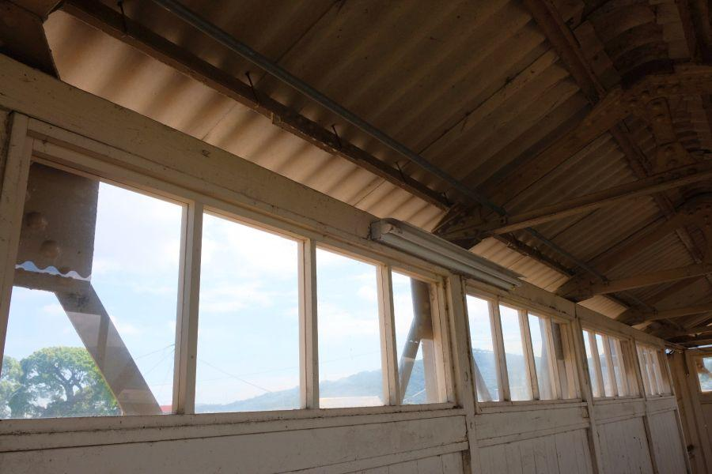
薄い窓ガラスがはめ殺しで入っています。
ここからほど良い高さで列車の撮影が可能。ただし窓が動かないので、
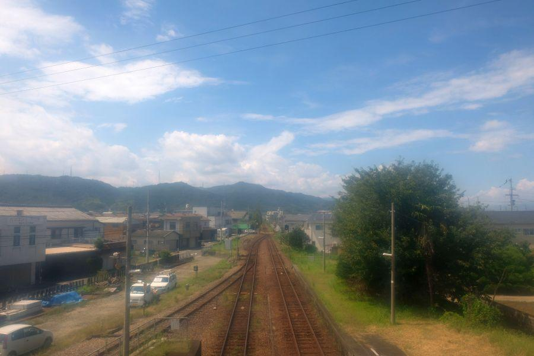
阿波池田方面
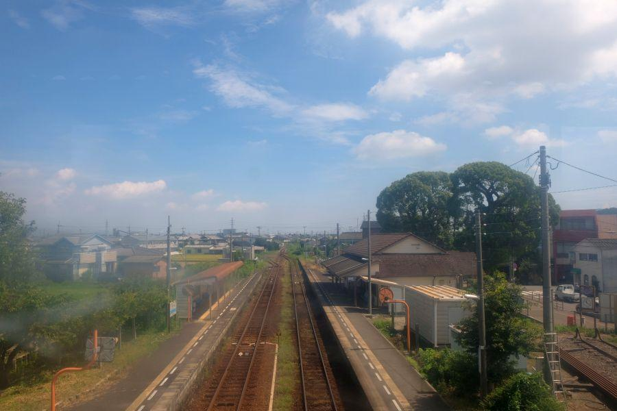
徳島方面
ブリッジから写真を撮ると、このように窓の曇りが写真に写り込みます。
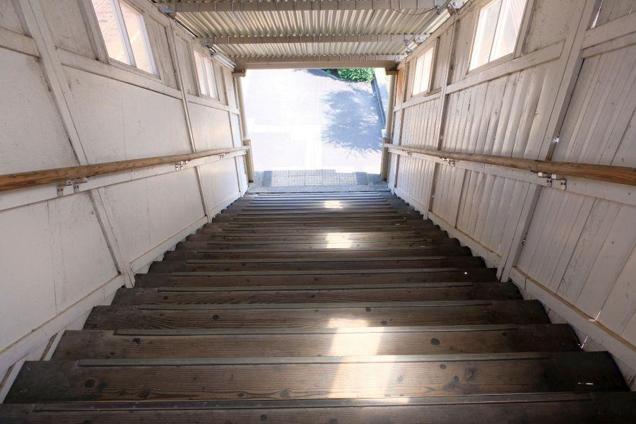
行きで登った階段を下り、1番線へ戻ります。
規格品ばかりの現代建造物には無いオリジナル感が、こちらの跨線橋の特徴です。
国鉄の置き土産①・駅名標
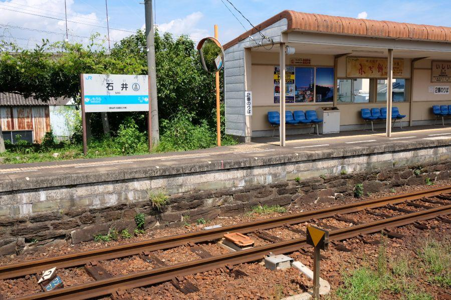
2番線を眺めたところ。
徳島線の特徴、増床されたプラットホームを見て取ることができます。
立てられた駅名標はJR四国規格のものですが、
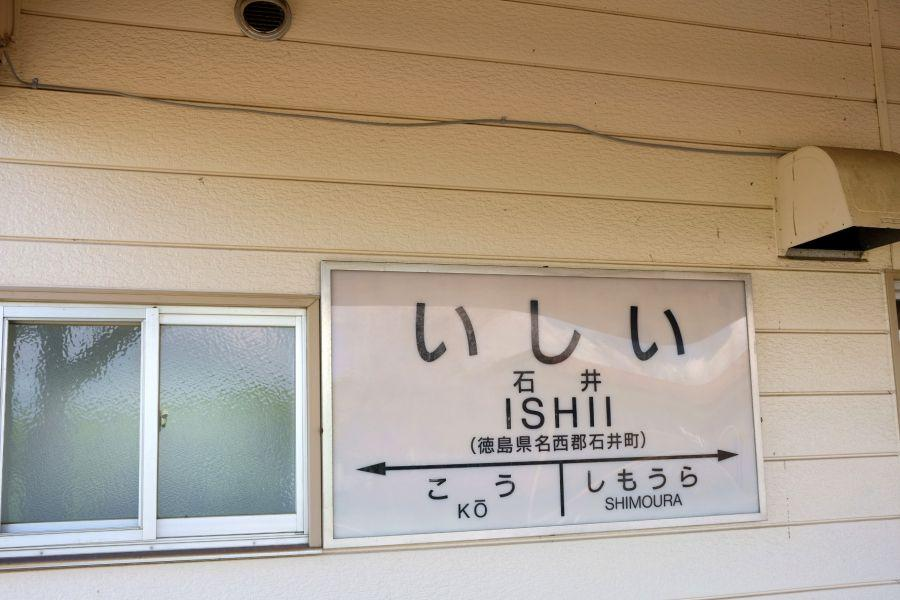
それとは別に、色遣いは至ってシンプルなこのデザイン。
国鉄が規格品として制作した駅名標になります。1番線・2番線の両方で見ることができる、国鉄時代の置き土産。
昔の駅は必ず駅員さんが居て、備品の保守管理も駅員さんの仕事の一つとして、駅ごとに任されていた時代がありました。駅名標が映っている古い写真を見ると、国鉄であっても手書きの駅名標を見ることができるのは、そのため。
時代が進んで無人駅が増えたことによる駅管理の問題や、乗客に駅や路線に親しみを持ってもらう等の目的で、国鉄は駅名標に同じデザインの規格品を導入しました。石井駅にあるこちらの駅名標は、その時に導入されたもの。
跨線橋の話で「規格品じゃない」「オリジナルが良い」と言ってしまいましたが、こちらの国鉄型駅名標はとても良いです。ということは、世の中いろんな規格品が存在しますが、それも何十年か経つとこうして良さを感じることができるようになるのでしょうか。
国鉄の置き土産②・キハ185系
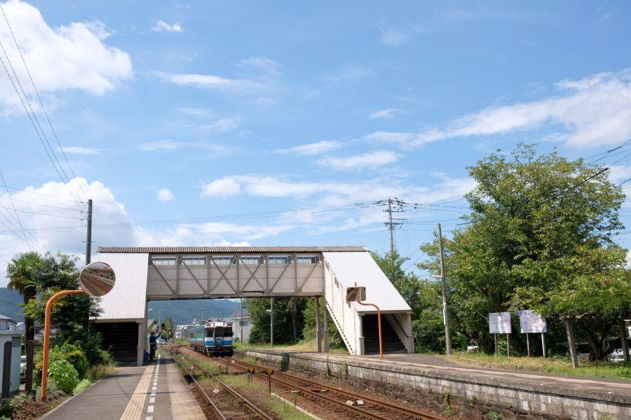
駅員さんとお話していたら「もうすぐ上りの特急列車が通過しますよ」と教えてくれました。やった！
(列車運用上の上下方向。本来は徳島に向かう方向が下り)
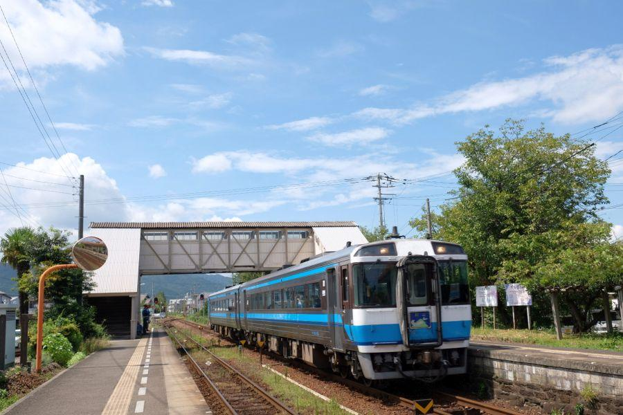
特急剣山(徳島～阿波池田)
こちらも国鉄の忘れ形見・キハ185系気動車。白いマスクに水色のラインは、伝統の四国色です。
明治時代のプラットホームに、
大正時代の跨線橋。
昭和時代に製造されたキハ185系気動車。
平成時代に走り始めた特急剣山。
何気に近代全時代が全て含まれている写真。パッと思いつくところで、そのような場所はなかなか存在しません。
(ヘッドマークが「剣山」じゃなければ昭和末期の風景→特急剣山の誕生は平成8年)
「二両で特急！？」
特急＝特別急行(Limited Express)
ですから、略称ではないほうを見ると猶更違和感がありますが、四国では特急列車の二両編成は珍しいことではありません。
むしろ、それまで出来なかった特急列車の二両編成での運転を可能にするために導入されたのが、当車両です。
国鉄... 一度に多くの人々を運ぶために長大編成・少数便
JR... 短編成・頻発運転
それぞれ旅客輸送の目的が異なります。
国鉄時代は収支度外視なんてこともあったようですが、分割民営化されてJR四国になると儲からないようではいけません。
簡単に言えば、
何時間に一回特急を走らせて、長大編成の列車が埋まる時は埋まるけど、ガラガラの時もあるのは仕方ないか。
JR化してこれではいけません。
厳しい経営が見込まれるJR四国・JR九州・JR北海道(いわゆる三島会社)では、国鉄からJRへの転換に際して、おんぶにだっこで会社を立ち上げました。こちらの特急車両はそのタイミングでJR化目前の四国に導入された車両です。
現在は予讃線・土讃線のような四国内の幹線路線から特急列車としての運用は退き、輸送密度が少ない徳島県内で特急列車として運用されたり、南予エリアで各駅停車用に転用。後発の2000系等が導入されて車両が余剰になった際には、JR九州へ売却されて「九州横断特急」「ゆふ」等に転用された車両も多い。
近年話題になった観光列車「四国まんなか千年ものがたり」や、JR九州の水戸岡鋭治氏デザインの「A列車で行こう」は、この車両と同じキハ185系を改造したもの。列車の世界もリノベーションが行われています。
石井さんの聖地巡礼
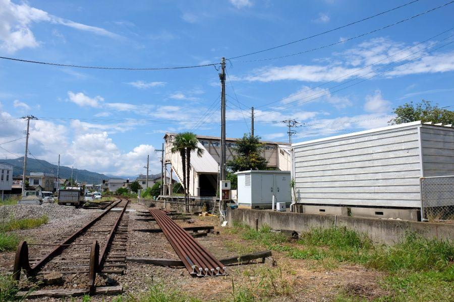
特急剣山が行った後の石井駅。(徳島県なりに)乗客が多い石井駅ですが、日中の閑散時間帯は駅からひとけが無くなります。駅員さんもお休み時間。
訪問時は女性の駅員さんで、こちらのカメラを提げた格好を見て
*「跨線橋ですか？」
「はい。鐡道院の刻字が見たくて」
「そういう方よくいらっしゃいますか？」
*「ええ」
*「色々調べて来られていると思いますが、国鉄時代の駅名標もあるんですよ」
「そうですかー！」
「知らなかったです！」
丁寧に応対して頂いたことと、合間を見ては清掃されたり花壇のお花に水やりを行われたり...
駅員さんが創り出す空気感がとても心地よい駅でした。
*「もしかして石井さん！？」
「いいえ、違います」
石井姓の方が「聖地巡礼」として訪問や、記念に入場券を購入されることが、よくあるそうです。
石井駅
< 自家用車 >
高松駅から 約1時間10分、65km
徳島阿波おどり空港から 約45分、29km
< 公共交通機関 >
JR徳島線・石井駅下車
※ 主な地点からの最速・最短距離
関連記事

2017,10/23 手作りの田舎そばを食べに、そばやへ < そばや / 徳島県 >

2017,11/26 四国の鉄道が繋がった瞬間を見届けた立会人 < 土讃線三縄駅 / 徳島県 >
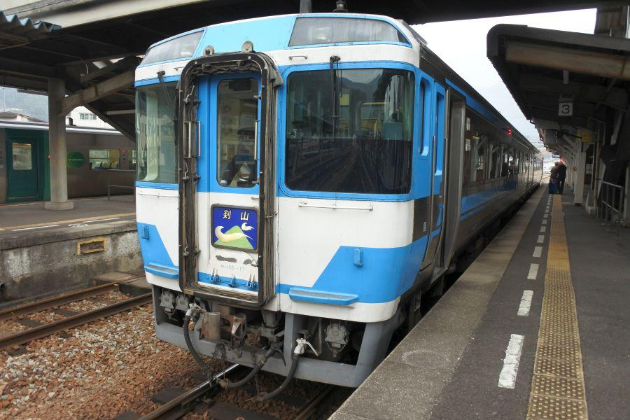
2018,1/30 やまびこ打線で一世を風靡した高校がある街の珍地名 < 阿波池田駅 / 徳島県 >

2018,8/10 白看板を通じて感じる、時が止まっている場所 < 旧式案内標識 / 四国各地>
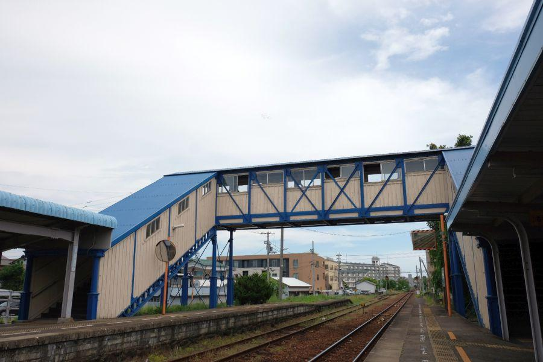
2019,8/11 明治時代の跨線橋と使用されていない長大プラットホームの秘密< 蔵本駅 / 徳島市 >
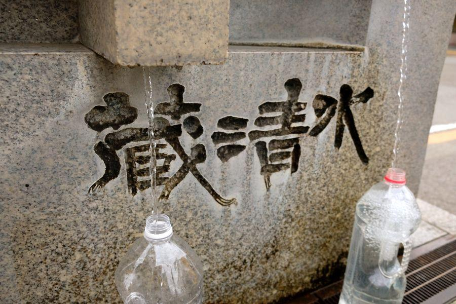
2019,8/17 市街地に湧き出る、戦争に翻弄された清水 < 蔵清水 / 徳島市 >
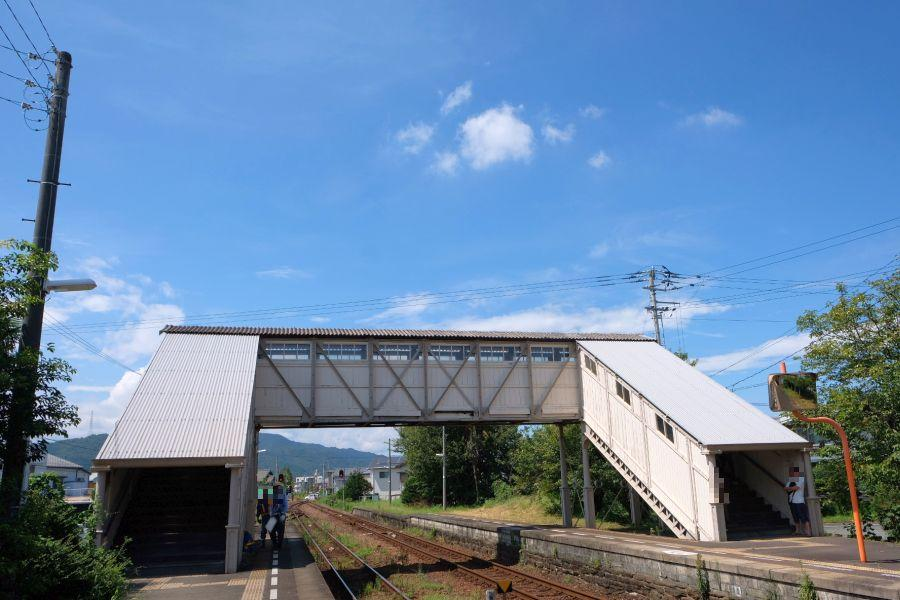